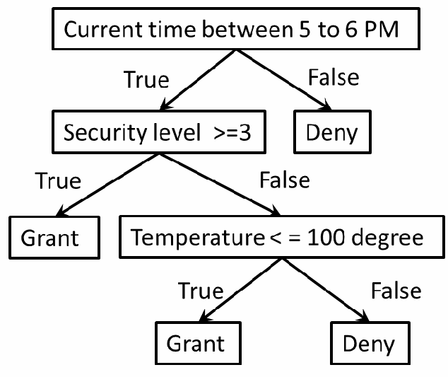

NIST IR 8360 日本語訳
英語タイトル : Machine Learning for Access Control Policy Verification日本語タイトル : アクセス制御ポリシー検証のための機械学習
公開日 : 2021-09-16
原文URL : https://csrc.nist.gov/pubs/ir/8360/final
翻訳編集 : 自動生成（有志による非公式の日本語訳）, 原文取得日 : 2026-10-31, 訳文 : 159 / 159 ブロック
[要約] NIST IR 8360 は、機械学習の分類アルゴリズムを適用することで、アクセス制御ポリシーを検証するための効率的で簡明な方法を提案する内部報告書です。従来のモデル証明、データ構造、テストオラクルの方法は網羅的に欠陥を発見できるテストケースの作成が課題であり、システムシミュレーションの方法はポリシーをシミュレーション対象のシステムに変換する必要がありました。提案する方法は、網羅的なテストケース、オラクル、システム変換を必要とせず、ポリシールールのロジックを直接検査します。報告書は、ランダムフォレスト分類アルゴリズムによる検証アプローチを、現在利用可能な機械学習ツールを使った例で示し、既存の検証方法の強化、数値属性を持つポリシーの検証、ポリシーの実施という三つの応用を挙げています。
NISTIR 8360
NISTIR 8360
Machine Learning for Access Control Policy Verification
アクセス制御ポリシー検証のための機械学習
Vincent C. Hu
Vincent C. Hu
This publication is available free of charge from:
本刊行物は次の URL から無料で入手できます:
https://doi.org/10.6028/NIST.IR.8360
https://doi.org/10.6028/NIST.IR.8360
NISTIR 8360
NISTIR 8360
Machine Learning for Access Control Policy Verification
アクセス制御ポリシー検証のための機械学習
Vincent C. Hu
Vincent C. Hu
Computer Security Division Information Technology Laboratory
コンピュータセキュリティ部門 情報技術研究所
This publication is available free of charge from:
本刊行物は次の URL から無料で入手できます:
https://doi.org/10.6028/NIST.IR.8360
https://doi.org/10.6028/NIST.IR.8360
September 2021
2021 年 9 月
U.S. Department of Commerce Gina M. Raimondo, Secretary
米国商務省 Gina M. Raimondo 長官
National Institute of Standards and Technology
国立標準技術研究所
James K. Olthoff, Performing the Non-Exclusive Functions and Duties of the Under Secretary of Commerce
James K. Olthoff、次の職の非専属的な職務および任務を代行：商務次官
for Standards and Technology & Director, National Institute of Standards and Technology
（標準・技術担当）兼 国立標準技術研究所所長
National Institute of Standards and Technology Interagency or Internal Report 8360 25 pages (September 2021)
国立標準技術研究所 省庁間報告書または内部報告書 8360 25 ページ（2021 年 9 月）
This publication is available free of charge from: https://doi.org/10.6028/NIST.IR.8360
本刊行物は次の URL から無料で入手できます: https://doi.org/10.6028/NIST.IR.8360
Certain commercial entities, equipment, or materials may be identified in this document in order to describe an experimental procedure or concept adequately. Such identification is not intended to imply recommendation or endorsement by NIST, nor is it intended to imply that the entities, materials, or equipment are necessarily the best available for the purpose.
本書では、実験の手順や概念を適切に説明するために、特定の商業事業者、機器、または資材を挙げている場合があります。こうした記載は、NIST による推奨や推薦を意味するものではなく、挙げられた事業者、資材、または機器が目的に照らして必ずしも最良であることを意味するものでもありません。
There may be references in this publication to other publications currently under development by NIST in accordance with its assigned statutory responsibilities. The information in this publication, including concepts and methodologies, may be used by federal agencies even before the completion of such companion publications. Thus, until each publication is completed, current requirements, guidelines, and procedures, where they exist, remain operative. For planning and transition purposes, federal agencies may wish to closely follow the development of these new publications by NIST.
本刊行物には、NIST が割り当てられた法定責任に従って現在策定中の他の刊行物への言及が含まれている場合があります。これらの関連刊行物が完成する前であっても、本刊行物の情報（概念や方法論を含む）を連邦機関が使用してもかまいません。したがって、各刊行物が完成するまでは、現行の要件、ガイドライン、および手順が存在する場合には、それらが引き続き有効です。計画および移行のため、連邦機関は、NIST によるこれらの新しい刊行物の策定状況を注意深く追うことを検討してもよいです。
Organizations are encouraged to review all draft publications during public comment periods and provide feedback to NIST. Many NIST cybersecurity publications, other than the ones noted above, are available at https://csrc.nist.gov/publications.
組織は、パブリックコメント期間中にすべてのドラフト刊行物を確認し、NIST にフィードバックを提供することが推奨されます。上記以外の多くの NIST サイバーセキュリティ刊行物は、https://csrc.nist.gov/publications で入手できます。
Comments on this publication may be submitted to:
本刊行物へのコメントは次の宛先に提出できます：
National Institute of Standards and Technology Attn: Computer Security Division, Information Technology Laboratory 100 Bureau Drive (Mail Stop 8930) Gaithersburg, MD 20899-8930 Email: ir8360-comments@nist.gov
National Institute of Standards and Technology Attn: Computer Security Division, Information Technology Laboratory 100 Bureau Drive (Mail Stop 8930) Gaithersburg, MD 20899-8930 Email: ir8360-comments@nist.gov
All comments are subject to release under the Freedom of Information Act (FOIA).
すべてのコメントは、情報自由法（FOIA）に基づく公開の対象となります。
Reports on Computer Systems Technology
コンピュータシステム技術に関する報告書
The Information Technology Laboratory (ITL) at the National Institute of Standards and Technology (NIST) promotes the U.S. economy and public welfare by providing technical leadership for the Nation’s measurement and standards infrastructure. ITL develops tests, test methods, reference data, proof of concept implementations, and technical analyses to advance the development and productive use of information technology. ITL’s responsibilities include the development of management, administrative, technical, and physical standards and guidelines for the cost-effective security and privacy of other than national security-related information in federal information systems.
国立標準技術研究所（NIST）の情報技術研究所（ITL）は、国の計測・標準インフラストラクチャに対する技術的なリーダーシップを提供することで、米国の経済と公共の福祉を促進しています。ITL は、情報技術の開発と生産的な利用を推進するため、テスト、テスト方法、参照データ、概念実証の実装、および技術分析を開発しています。ITL の責務には、連邦情報システムにおける国家安全保障関連以外の情報について、費用対効果の高いセキュリティとプライバシーを実現するための、管理面・運用面・技術面・物理面の標準およびガイドラインの策定が含まれます。
Abstract
概要
Access control policy verification ensures that there are no faults within the policy that leak or block access privileges. As a software test, access control policy verification relies on methods such as model proof, data structure, system simulation, and test oracle to verify that the policy logic functions as expected. However, these methods have capability and performance issues related to inaccuracy and complexity limited by applied technologies. For instance, model proof, test oracle, and data structure methods initially assume that the policy under verification is faultless unless the policy model cannot hold for test cases. Thus, the challenge of the method is to compose test cases that can comprehensively discover all faults. Alternatively, a system simulation method requires translating the policy to a simulated system. The translation between systems may be difficult or impractical to implement if the policy logic is complicated or the number of policy rules is large. To answer these challenges, this internal report (IR) proposes an efficient and straightforward method for access control policy verification by applying a classification algorithm of machine learning, which does not require comprehensive test cases, oracle, or system translation but rather checks the logic of policy rules directly, making it more efficient and feasible compared to traditional methods.
アクセス制御ポリシーの検証は、ポリシー内に、アクセス権限を漏えいさせたり妨げたりする欠陥がないことを確実にします。ソフトウェアテストとして、アクセス制御ポリシーの検証は、ポリシーのロジックが期待どおりに機能することを検証するために、モデル証明、データ構造、システムシミュレーション、テストオラクルなどの方法に依存しています。しかし、これらの方法には、適用される技術によって制限される不正確さと複雑さに関する、能力と性能の問題があります。たとえば、モデル証明、テストオラクル、データ構造の方法は、ポリシーのモデルがテストケースに対して成立しない場合を除き、検証対象のポリシーを当初は欠陥がないものと仮定します。したがって、これらの方法の課題は、すべての欠陥を網羅的に発見できるテストケースを作成することです。一方、システムシミュレーションの方法では、ポリシーをシミュレーション対象のシステムに変換する必要があります。ポリシーのロジックが複雑な場合やポリシールールの数が多い場合、システム間の変換は困難であったり、実装が非現実的であったりする場合があります。これらの課題に対応するため、本内部報告書（IR）は、機械学習の分類アルゴリズムを適用することで、アクセス制御ポリシーを検証するための効率的で簡明な方法を提案します。この方法は、網羅的なテストケース、オラクル、システム変換を必要とせず、ポリシールールのロジックを直接検査するため、従来の方法と比べて効率的で実現しやすくなります。
Keywords
キーワード
attribute based access control; access control; access control test; access control verification; AI; authorization; machine learning; policy.
attribute based access control; access control; access control test; access control verification; AI; authorization; machine learning; policy.
Acknowledgments
謝辞
The author, Vincent C. Hu of the National Institute of Standards and Technology (NIST), wishes to thank Isabel Van Wyk and Jim Foti (NIST) who reviewed drafts of this document. The author also gratefully acknowledges and appreciates the comments and contributions made by government agencies, private organizations, and individuals in providing direction and assistance in the development of this document.
著者である国立標準技術研究所（NIST）の Vincent C. Hu は、本書のドラフトをレビューしてくれた NIST の Isabel Van Wyk と Jim Foti に感謝します。また、著者は、本書の作成にあたり方向性と支援を提供してくださった政府機関、民間組織、個人からのコメントと貢献にも深く感謝します。
Patent Disclosure Notice
特許開示通知
NOTICE: ITL has requested that holders of patent claims whose use may be required for compliance with the guidance or requirements of this publication disclose such patent claims to ITL. However, holders of patents are not obligated to respond to ITL calls for patents, and ITL has not undertaken a patent search in order to identify which, if any, patents may apply to this publication.
通知: ITL は、本刊行物のガイダンスまたは要件への準拠に使用が必要となる可能性のある特許請求の権利者に対し、当該特許請求を ITL に開示するよう求めています。ただし、特許権者には ITL からの特許開示の求めに応じる義務はなく、ITL は、どの特許が本刊行物に該当するかを特定するための特許調査を行っていません。
As of the date of publication and following call(s) for the identification of patent claims whose use may be required for compliance with the guidance or requirements of this publication, no such patent claims have been identified to ITL.
発行日の時点で、本刊行物のガイダンスまたは要件への準拠に使用が必要となる可能性のある特許請求の特定を求める呼びかけを行った後も、そのような特許請求は ITL に特定されていません。
No representation is made or implied by ITL that licenses are not required to avoid patent infringement in the use of this publication.
ITL は、本刊行物の使用にあたって特許侵害を避けるためにライセンスが不要であることを、明示的にも黙示的にも表明するものではありません。
Executive Summary
エグゼクティブサマリー
Access control policy verification ensures that there are no faults within the policy that leak or block access privileges. As a software test, access control policy verification relies on methods such as model proof, data structure, system simulation, and test oracle to verify that the policy logic functions as expected. However, these methods have capability and performance issues related to inaccuracy and complexity limited by applied technologies. For instance, model proof, test oracle, and data structure methods initially assume that the policy under verification is faultless unless the policy model cannot hold for test cases. Thus, the challenge of the method is to compose test cases that can comprehensively discover all faults. Alternatively, a system simulation method requires translating the policy to a simulated system. The translation between systems may be difficult or impractical to implement if the policy logic is complicated or the number of policy rules is large.
アクセス制御ポリシーの検証は、ポリシー内に、アクセス権限を漏えいさせたり妨げたりする欠陥がないことを確実にします。ソフトウェアテストとして、アクセス制御ポリシーの検証は、ポリシーのロジックが期待どおりに機能することを検証するために、モデル証明、データ構造、システムシミュレーション、テストオラクルなどの方法に依存しています。しかし、これらの方法には、適用される技術によって制限される不正確さと複雑さに関する、能力と性能の問題があります。たとえば、モデル証明、テストオラクル、データ構造の方法は、ポリシーのモデルがテストケースに対して成立しない場合を除き、検証対象のポリシーを当初は欠陥がないものと仮定します。したがって、これらの方法の課題は、すべての欠陥を網羅的に発見できるテストケースを作成することです。一方、システムシミュレーションの方法では、ポリシーをシミュレーション対象のシステムに変換する必要があります。ポリシーのロジックが複雑な場合やポリシールールの数が多い場合、システム間の変換は困難であったり、実装が非現実的であったりする場合があります。
To answer these challenges, this report proposes an efficient and straightforward method for access control policy verification by applying a classification algorithm of machine learning, which does not require comprehensive test cases, oracle, or system translation but rather checks the logic of policy rules directly, making it more efficient and feasible compared to traditional methods. This report demonstrates an experiment for the proposed method with an example that uses current available machine learning tools to facilitate the random forest classification algorithm. The result illustrates its capabilities as well as parameter settings for performing the verification steps. Ultimately, three general applications are provided: enhancement of existing verification methods, verification of access control policies with numerical attributes, and policy enforcement that can be supported by the proposed machine learning policy verification method.
これらの課題に対応するため、本報告書は、機械学習の分類アルゴリズムを適用することで、アクセス制御ポリシーを検証するための効率的で簡明な方法を提案します。この方法は、網羅的なテストケース、オラクル、システム変換を必要とせず、ポリシールールのロジックを直接検査するため、従来の方法と比べて効率的で実現しやすくなります。本報告書では、現在利用可能な機械学習ツールを使ってランダムフォレスト分類アルゴリズムを実行する例を用いて、提案する方法の実験を示します。その結果は、検証ステップを実行するためのパラメータ設定とともに、この方法の能力を示しています。最終的に、提案する機械学習ポリシー検証方法で支援できる三つの一般的な応用として、既存の検証方法の強化、数値属性を持つアクセス制御ポリシーの検証、およびポリシーの実施を示します。
Table of Contents
目次
List of Figures
図の一覧
List of Tables
表の一覧
1 Introduction
1 はじめに
As a software test, access control policy verification relies on methods such as model proof [Hwang et al. 10, ACPT], data structure [MARG], system simulation [VK13, ACRLCS], and test oracle [ACTS] to verify the expected functional logic implied in policy rules [AS15]. The model proof method converts policy to a finite state machine (FSM) and verifies test access cases against it to detect policy faults, such as rule conflict, access blocking, or privilege leakage [SP192]. For instance, [ACPT] applies the symbolic model verification [NuSMV] tool to build an FSM model in terms of policy rule attributes. Thus, a test case is represented by a deterministic finite state transducer that corresponds to the FSM, which should satisfy the two requirements below after it takes actions in compliance with the test case:
ソフトウェアテストとして、アクセス制御ポリシーの検証は、ポリシールールに内在する期待される機能ロジックを検証するために、モデル証明 [Hwang et al. 10, ACPT]、データ構造 [MARG]、システムシミュレーション [VK13, ACRLCS]、テストオラクル [ACTS] などの方法に依存しています [AS15]。モデル証明の方法は、ポリシーを有限状態機械（FSM）に変換し、それに対してテストのアクセスケースを検証することで、ルールの競合、アクセスの妨害、権限の漏えいなどのポリシーの欠陥を検出します [SP192]。たとえば、[ACPT] は、記号モデル検査 [NuSMV] ツールを適用して、ポリシールールの属性に基づく FSM モデルを構築します。したがって、テストケースは FSM に対応する決定性有限状態トランスデューサで表現され、テストケースに従った動作を行った後、次の二つの要件を満たさなければなりません。
1.Safety – There is no violation of the FSM model to the test case, and it is assured that the FSM will eventually be in a desired state.
1.安全性（Safety）– テストケースに対する FSM モデルの違反がなく、FSM が最終的に望ましい状態になることが保証されます。
2.Liveness – Where the FSM will have neither a deadlock in which the system waits forever for system events nor a livelock in which the model repeatedly executes the same operations forever [NuSMV].
2.活性（Liveness）– FSM では、システムがシステムイベントを永遠に待ち続けるデッドロックも、モデルが同じ動作を永遠に繰り返し実行するライブロックも発生しません [NuSMV]。
An access control policy verification method uses structured data that represents underlying policy rule logics. The data structure, such as a binary decision diagram [CFMY93], is given assignments of binary values to the policy attributes that traverse from the root to a terminal of the rule’s permission [Fisler et al. 05]. This method is used by software tool suite Margrave [MARG] for verifying safety requirements (test cases) against policies written in eXtensible Access Control Markup Language (XACML) [XACML]. Margrave’s API verifies safety requirements in the form of queries, which should hold by the binary tree. Otherwise, counterexamples are produced indicating violations of the tree structure [SND13].
アクセス制御ポリシーの検証方法には、基盤となるポリシールールのロジックを表す構造化データを用いるものがあります。二分決定図 [CFMY93] などのデータ構造において、ルールの許可の終端に至るまでルートから走査するポリシー属性に、二値が割り当てられます [Fisler et al. 05]。この方法は、eXtensible Access Control Markup Language（XACML）[XACML] で記述されたポリシーに対して安全性要件（テストケース）を検証する、ソフトウェアツールスイート Margrave [MARG] で使用されています。Margrave の API は、二分木で成立すべきクエリの形式で安全性要件を検証します。成立しない場合は、木構造の違反を示す反例が生成されます [SND13]。
Model proof and data structure methods initially accept the policy under verification as faultless until tested against specified cases or requirements. Faults are then claimed if the policy model or data structure cannot hold. Therefore, in order to detect all possible faults embedded in a policy, the challenge is to compose test cases or requirements that can discover them. Other similar methods, however, may rely on a test oracle that contains all possible access control requests and access permissions as input to verify if requests’ permissions conflict with expected permissions assigned to rules. Thus, excessive computing time or resources are required for large numbers of policy attributes. For example, given \(n\), \(2^{n+1}\) access requests (1 for permission states) are required for the test oracle. Most of today’s access control policies can easily have hundreds of attributes. Hence, test oracles will be too large to be practically performed.
モデル証明とデータ構造の方法は、指定されたケースや要件に対してテストされるまで、検証対象のポリシーを当初は欠陥がないものとして受け入れます。その後、ポリシーのモデルやデータ構造が成立しない場合に、欠陥があると主張されます。したがって、ポリシーに埋め込まれたあらゆる可能な欠陥を検出するには、それらを発見できるテストケースや要件を作成することが課題となります。一方、類似のほかの方法では、ルールに割り当てられた期待される許可と、リクエストの許可が競合しないかを検証するために、あらゆる可能なアクセス制御リクエストとアクセス許可を入力として含むテストオラクルに依存する場合があります。そのため、ポリシー属性の数が多い場合は、過大な計算時間やリソースが必要になります。たとえば、\(n\) が与えられた場合、テストオラクルには \(2^{n+1}\) 個のアクセスリクエスト（1 は許可状態の分）が必要です。今日のアクセス制御ポリシーの大半は、容易に数百の属性を持ち得ます。したがって、テストオラクルは大きくなりすぎて、実際には実行できません。
In addition to model proof and structured data, a simulated system is built to simulate the access control policy rules for verification. In such systems, each policy rule is represented by simulated system components such that faults can be detected by triggering the system functions that cause errors. For example, the access control Rule Logic Circuit Simulation (ACRLCS) system [ACRLCS] detects faults when rule circuits are added that conflict with existing logic circuits. ACRLCS allows error detecting and fixing to be performed in real time before adding rule circuits that further complicate the detecting effort. In other words, instead of checking by retracing the interrelations between rules after the policy is completed, it only checks the new added rule against previous “correct” ones. Even though this method does not require comprehensive large numbers of test cases, requirements, or an oracle, the translation or mapping process for implementing the simulated system is a challenge [VK13].
モデル証明と構造化データに加えて、検証のためにアクセス制御ポリシールールをシミュレーションするシステムが構築されます。このようなシステムでは、各ポリシールールがシミュレーション対象のシステムコンポーネントで表現され、エラーを引き起こすシステム機能を起動することで欠陥を検出できます。たとえば、アクセス制御 Rule Logic Circuit Simulation（ACRLCS）システム [ACRLCS] は、既存のロジック回路と競合するルール回路が追加されたときに欠陥を検出します。ACRLCS では、検出作業をさらに複雑にするルール回路を追加する前に、エラーの検出と修正をリアルタイムで行えます。言い換えると、ポリシーの完成後にルール間の相互関係をたどり直して検査するのではなく、新しく追加されたルールを、以前の「正しい」ルールに対してのみ検査します。この方法は、網羅的な数のテストケース、要件、またはオラクルを必要としませんが、シミュレーション対象のシステムを実装するための変換または対応付けの過程が課題となります [VK13]。
This report proposes an innovative technique that applies a classification algorithm of machine learning [ML] to answer challenges of capability due to the coverage of test cases or oracle and the difficulty of system translation from traditional access control policy verification methods. In this report, the Introduction describes the challenges of traditional policy verification methods. Section 2 explains how an ML Classification method can be applied to policy verification. Section 3 demonstrates a policy verification approach for an ML random forest classification (RFC) algorithm. Section 4 describes general access control applications that can benefit from the proposed method. The last section is the Conclusion.
本報告書は、従来のアクセス制御ポリシーの検証方法における、テストケースやオラクルの網羅性に起因する能力上の課題と、システム変換の困難さに対応するため、機械学習 [ML] の分類アルゴリズムを適用する革新的な技術を提案します。本報告書では、「はじめに」で従来のポリシー検証方法の課題を説明します。セクション 2 では、ML 分類の方法をポリシー検証にどのように適用できるかを説明します。セクション 3 では、ML ランダムフォレスト分類（RFC）アルゴリズムによるポリシー検証アプローチを示します。セクション 4 では、提案する方法の恩恵を受けられる、一般的なアクセス制御の応用を説明します。最後のセクションは「結論」です。
2 Machine Learning for Access Control Verification
2 アクセス制御検証のための機械学習
Machine learning has been used for device control, system analysis, and business forecasting. However, the use of ML for software testing is in the early stages [AWCS, CAT5]. In particular, ML applications for model proof are still elusive and have yet to be explored. ML classification allows for the generation or prediction of target classes for new input data using some sample training data produced by running the system instead of comprehensive input data. For access control policy verification, the training data is assigned attributes’ values of policy rules, and the target for classification is access permissions (e.g., grant and deny) assigned to rules. The data is consumed by an ML classification algorithm to generate a classification model. Querying the accuracy of training data against the model allows for the detection of inconsistencies, indicating faults found among policy rules. In addition, to verify new or updated policy rules, they need to be contained in test data for additional accuracy analysis on test data.
機械学習は、デバイスの制御、システム分析、事業予測に使われてきました。しかし、ソフトウェアテストへの ML の利用は初期段階にあります [AWCS, CAT5]。特に、モデル証明への ML の応用はいまだとらえどころがなく、まだ探究されていません。ML 分類では、網羅的な入力データの代わりに、システムを実行して得られたいくつかのサンプルの訓練データを使って、新しい入力データに対する目標クラスを生成または予測できます。アクセス制御ポリシーの検証では、訓練データにはポリシールールの属性値が割り当てられ、分類の目標はルールに割り当てられたアクセス許可（たとえば、許可と拒否）です。このデータは ML 分類アルゴリズムによって処理され、分類モデルが生成されます。モデルに対する訓練データの精度を照会することで、不整合を検出でき、それはポリシールール間で欠陥が見つかったことを示します。加えて、新しいポリシールールや更新されたポリシールールを検証するには、それらをテストデータに含め、テストデータでの精度をさらに分析する必要があります。
Decision tree (DT) and random forest classification (RFC) are two of the main ML classification algorithms capable of access control policy verification. Among other ML classification algorithms, which are better suited to regression analysis for numerical data [MG17], DT and RFC algorithms apply binary tree algorithms that support the processing of non-regression analysis of binary data. Figure 1 shows an example binary tree model generated by the RFC classification algorithm.
決定木（DT）とランダムフォレスト分類（RFC）は、アクセス制御ポリシーの検証が可能な主要な ML 分類アルゴリズムのうちの二つです。数値データの回帰分析により適した他の ML 分類アルゴリズム [MG17] とは異なり、DT と RFC のアルゴリズムは二分木アルゴリズムを適用し、二値データの非回帰分析の処理をサポートします。図 1 に、RFC 分類アルゴリズムが生成する二分木モデルの例を示します。
![Figure 1a: decision subtree generated by the RFC classifier. Root node: "write <= 0.5, gini = 0.5, samples = 9, value = [6, 7], class = grant". True branch: leaf "gini = 0.0, samples = 2, value = [4, 0], class = deny". False branch: "subject attribute 1 <= 0.5, gini = 0.35, samples = 7, value = [2, 7], class = grant", which splits into "object attribute 3 <= 0.5, gini = 0.5, samples = 2, value = [1, 1], class = deny" (leaves: "gini = 0.0, samples = 1, value = [1, 0], class = deny" and "gini = 0.0, samples = 1, value = [0, 1], class = grant") and "object attritube 1 <= 0.5, gini = 0.24, samples = 5, value = [1, 6], class = grant" (leaf "gini = 0.0, samples = 3, value = [0, 5], class = grant" and node "subject attribute 2 <= 0.5, gini = 0.5, samples = 2, value = [1, 1], class = deny", whose leaves are "gini = 0.0, samples = 1, value = [1, 0], class = deny" and "gini = 0.0, samples = 1, value = [0, 1], class = grant"). Deny nodes are orange and grant nodes are blue.](assets/ir-8360/p0011-figure-02.png)
図1a: RFC分類器が生成した決定サブツリー。根ノード：「write <= 0.5, gini = 0.5, samples = 9, value = [6, 7], class = grant」。True側：葉「gini = 0.0, samples = 2, value = [4, 0], class = deny」。False側：「subject attribute 1 <= 0.5, gini = 0.35, samples = 7, value = [2, 7], class = grant」で、これが「object attribute 3 <= 0.5, gini = 0.5, samples = 2, value = [1, 1], class = deny」（葉：「gini = 0.0, samples = 1, value = [1, 0], class = deny」と「gini = 0.0, samples = 1, value = [0, 1], class = grant」）と、「object attritube 1 <= 0.5, gini = 0.24, samples = 5, value = [1, 6], class = grant」（葉：「gini = 0.0, samples = 3, value = [0, 5], class = grant」とノード「subject attribute 2 <= 0.5, gini = 0.5, samples = 2, value = [1, 1], class = deny」。その葉は「gini = 0.0, samples = 1, value = [1, 0], class = deny」と「gini = 0.0, samples = 1, value = [0, 1], class = grant」）。deny のノードは橙色、grant のノードは青色です。
![Figure 1b: decision subtree generated by the RFC classifier. Root node: "object attritube 1 <= 0.5, gini = 0.5, samples = 8, value = [7, 6], class = deny". True branch: "write <= 0.5, gini = 0.47, samples = 4, value = [3, 5], class = grant", with leaves "gini = 0.0, samples = 2, value = [3, 0], class = deny" and "gini = 0.0, samples = 2, value = [0, 5], class = grant". False branch: "subject attribute 1 <= 0.5, gini = 0.32, samples = 4, value = [4, 1], class = deny", with leaf "gini = 0.0, samples = 2, value = [2, 0], class = deny" and node "subject attribute 2 <= 0.5, gini = 0.44, samples = 2, value = [2, 1], class = deny", whose leaves are "gini = 0.0, samples = 1, value = [2, 0], class = deny" and "gini = 0.0, samples = 1, value = [0, 1], class = grant". Deny nodes are orange and grant nodes are blue.](assets/ir-8360/p0011-figure-01.png)
図1b: RFC分類器が生成した決定サブツリー。根ノード：「object attritube 1 <= 0.5, gini = 0.5, samples = 8, value = [7, 6], class = deny」。True側：「write <= 0.5, gini = 0.47, samples = 4, value = [3, 5], class = grant」で、葉：「gini = 0.0, samples = 2, value = [3, 0], class = deny」と「gini = 0.0, samples = 2, value = [0, 5], class = grant」。False側：「subject attribute 1 <= 0.5, gini = 0.32, samples = 4, value = [4, 1], class = deny」で、葉「gini = 0.0, samples = 2, value = [2, 0], class = deny」とノード「subject attribute 2 <= 0.5, gini = 0.44, samples = 2, value = [2, 1], class = deny」。その葉は「gini = 0.0, samples = 1, value = [2, 0], class = deny」と「gini = 0.0, samples = 1, value = [0, 1], class = grant」です。deny のノードは橙色、grant のノードは青色です。
Figure 1: 1a (above), 1b (below) – Subtrees model generated by RFC classifier
図 1: 1a（上）、1b（下）– RFC 分類器が生成する部分木モデル
Compared to DT, an RFC algorithm is more suitable for access control policy verification because from the perspective of a rendered model, an RFC algorithm generates ensembles of decision subtrees that represent multiple model policy rules. In contrast, a DT algorithm generates a single decision tree model that represents a single rule underlying combined rule logics. The rule is hard to abstract into separate expressive rules unless the DT tree is pruned or limited to split, but that might cause incompleteness of the model. In addition, policy attribute values may be binary or non-binary (e.g., rank and age) types that are applicable to different traditional verification methods. For both algorithms, verifications of policies have only a binary attribute value. The overfitting of models will not cause inaccuracy. However, for non-binary values with numeric number policies, such as a situation-aware policy, the classification is based on the regression analysis, and the overfitting may cause inaccurate analysis. In this regard, RFC is able to reduce overfitting while retaining accuracy, which DT does not support.
DT と比べて、RFC アルゴリズムはアクセス制御ポリシーの検証により適しています。描画されたモデルの観点では、RFC アルゴリズムは複数のモデルポリシールールを表す決定部分木のアンサンブルを生成します。これに対し、DT アルゴリズムは、組み合わされたルールロジックの基礎となる単一のルールを表す、単一の決定木モデルを生成します。そのルールを個別の表現可能なルールに抽象化するのは困難です。DT の木を枝刈りするか、分割を制限すれば抽象化できる場合がありますが、その場合、モデルが不完全になるおそれがあります。加えて、ポリシー属性値には二値のものと非二値のもの（たとえば、階級や年齢）があり、それぞれに適用できる従来の検証方法は異なります。どちらのアルゴリズムでも、ポリシー検証に使う属性値は二値のみです。モデルの過学習が不正確さを引き起こすことはありません。しかし、状況認識型ポリシーのように数値属性値を扱うポリシーでは、分類は回帰分析に基づくため、過学習が不正確な分析を引き起こす可能性があります。この点で、RFC は精度を保ちながら過学習を減らすことができますが、DT はこれをサポートしていません。
In summary, the advantages of the RFC algorithm over the DT algorithm and traditional verification methods for access control policy verification are illustrated in Figure 2. The numbers attached to the dotted lines categorize the challenges listed below, which are answered by the connecting ML classification methods in squares.
要約すると、アクセス制御ポリシーの検証における、DT アルゴリズムや従来の検証方法に対する RFC アルゴリズムの利点を、図 2 に示します。点線に付された番号は、以下に挙げる課題を分類しており、四角形で示された、接続された ML 分類の方法がこれらに対処します。
1.Requires test case/requirements or oracle to discover all possible policy faults
1.あらゆる可能なポリシーの欠陥を発見するために、テストケース／要件またはオラクルが必要になる
2.Difficult to implement and update to the simulated system
2.シミュレーション対象のシステムの実装と更新が困難である
3.Cannot render separated policy rules from model and may overfit for policy with non-binary attributes values
3.モデルから個別のポリシールールを描画できず、非二値の属性値を持つポリシーでは過学習を起こす可能性がある
The solid lines point to the applicable traditional verification methods or ML classification algorithms for the connected access control policies in the circle with the types of attributes specified.
実線は、属性の種類が指定された円内のアクセス制御ポリシーに適用可能な、接続先の従来の検証方法または ML 分類アルゴリズムを指します。
![Diagram with two dashed boxes. Left box "AC Policies types" contains two circles: "Boolean only Attribute AC Policy" and "Boolean and Non-Boolean Attribute AC Policy". Right box "AC Policy Verification Methods" contains five squares: "Finite State Model", "Structured Data", "System Simulation", "Decision Tree Classification" and "Random Forest Classification" (the last two with thick borders). Solid arrows: from the Boolean-only policy to all five methods; from the Boolean and non-Boolean policy to Finite State Model, System Simulation, Decision Tree Classification and Random Forest Classification. Dashed curved arrows numbered 1, 2 and 3 run from Random Forest Classification and Decision Tree Classification back to the other methods: challenge 1 points to Finite State Model and Structured Data, challenge 2 to System Simulation and Decision Tree Classification, and challenge 3 to Decision Tree Classification.](assets/ir-8360/p0013-figure-01.png)
2つの破線の枠からなる図です。左の枠「AC Policies types」（アクセス制御ポリシーの種類）には、円「Boolean only Attribute AC Policy」（ブール値の属性だけのポリシー）と「Boolean and Non-Boolean Attribute AC Policy」（ブール値と非ブール値の属性のポリシー）があります。右の枠「AC Policy Verification Methods」（検証方法）には、四角「Finite State Model」「Structured Data」「System Simulation」「Decision Tree Classification」「Random Forest Classification」があり、最後の2つは太枠です。実線の矢印は、ブール値だけのポリシーから5つの方法すべてへ、ブール値と非ブール値のポリシーから Finite State Model、System Simulation、Decision Tree Classification、Random Forest Classification へ向かいます。番号1・2・3の付いた破線の曲線の矢印が、Random Forest Classification と Decision Tree Classification から他の方法へ向かいます。1は Finite State Model と Structured Data、2は System Simulation と Decision Tree Classification、3は Decision Tree Classification を指します。
Figure 2: Mapping of access control policy types and verification methods
図 2: アクセス制御ポリシーの種類と検証方法の対応付け
As shown in Figure 2, RFC is the only method that can answer all three challenges, which other methods can only partially address.
図 2 に示すように、RFC は三つの課題すべてに対処できる唯一の方法であり、ほかの方法は部分的にしか対処できません。
3 RFC Verification Approach
3 RFC による検証アプローチ
Applying the RFC algorithm to policy verification requires the preparation of a data table that contains classification-required training and test data transferred from specific access control policy rules. In the table, each column contains an attribute, action, or permission value. Each row represents a policy rule, and the access permission is based on the attribute and action values in the row.
RFC アルゴリズムをポリシー検証に適用するには、特定のアクセス制御ポリシールールから変換した、分類に必要な訓練データとテストデータを含むデータ表を準備する必要があります。表の各列には、属性、アクション、または許可の値が入ります。各行は一つのポリシールールを表し、アクセス許可は、その行の属性とアクションの値に基づきます。
In Figure 3, an access control policy is specified in a table: columns A and B contain subject attributes, columns C and D contain available actions, columns E to G contain object attributes, and column H contains the grant (1) or deny (0) access permission for rules from rows 2 to 20. For example, columns A and B are subject attributes “Project-A member” and “Project-B member”, and columns C and D are available access actions of read and write. Columns E to G are “document-X”, “document-Y”, and “document-Z”. Column H is a permission state 1 or 0, meaning “grant” or “deny.” For instance, the rule of row 2 states that a user is a member of Project-A and Project-B and can read the document-X.
図 3 では、アクセス制御ポリシーが表に指定されています。列 A と B にはサブジェクト属性、列 C と D には利用可能なアクション、列 E から G にはオブジェクト属性、列 H には行 2 から 20 のルールの許可（1）または拒否（0）のアクセス許可が入ります。たとえば、列 A と B はサブジェクト属性の「Project-A member」と「Project-B member」、列 C と D は利用可能なアクセスアクションの read と write です。列 E から G は「document-X」「document-Y」「document-Z」です。列 H は許可状態の 1 または 0 で、「許可」または「拒否」を意味します。たとえば、行 2 のルールは、ユーザーが Project-A と Project-B のメンバーであり、document-X を読み取れることを示しています。
![Spreadsheet screenshot with columns A to H and rows 1 to 20. Row 1: A = 19, B = 7, C = deny, D = grant. Rows 2 to 20 contain 0/1 values for A, B, C, D, E, F, G, H: row 2: 1 1 1 0 1 0 0 1; row 3: 1 1 1 0 0 1 0 1; row 4: 1 1 1 0 0 0 1 0; row 5: 1 1 0 1 1 0 0 1; row 6: 1 1 0 1 0 1 0 1; row 7: 1 1 0 1 0 0 1 1; row 8: 1 0 1 0 1 0 0 1; row 9: 1 0 1 0 0 1 0 0; row 10: 1 0 1 0 0 0 1 0; row 11: 1 0 0 1 1 0 0 0; row 12: 1 0 0 1 0 1 0 0; row 13: 1 0 0 1 0 0 1 1; row 14: 0 1 1 0 1 0 0 0; row 15: 0 1 1 0 0 1 0 1; row 16: 0 1 1 0 0 0 1 0; row 17: 0 1 0 1 1 0 0 0; row 18: 0 1 0 1 0 1 0 0; row 19: 0 1 0 1 0 0 1 1; row 20: 1 1 0 1 0 1 0 1.](assets/ir-8360/p0014-figure-01.png)
表計算ソフトの画面です。列は A〜H、行は 1〜20 です。1行目は A = 19、B = 7、C = deny、D = grant です。2〜20行目は A、B、C、D、E、F、G、H の順に 0 または 1 が入っています。2行目: 1 1 1 0 1 0 0 1、3行目: 1 1 1 0 0 1 0 1、4行目: 1 1 1 0 0 0 1 0、5行目: 1 1 0 1 1 0 0 1、6行目: 1 1 0 1 0 1 0 1、7行目: 1 1 0 1 0 0 1 1、8行目: 1 0 1 0 1 0 0 1、9行目: 1 0 1 0 0 1 0 0、10行目: 1 0 1 0 0 0 1 0、11行目: 1 0 0 1 1 0 0 0、12行目: 1 0 0 1 0 1 0 0、13行目: 1 0 0 1 0 0 1 1、14行目: 0 1 1 0 1 0 0 0、15行目: 0 1 1 0 0 1 0 1、16行目: 0 1 1 0 0 0 1 0、17行目: 0 1 0 1 1 0 0 0、18行目: 0 1 0 1 0 1 0 0、19行目: 0 1 0 1 0 0 1 1、20行目: 1 1 0 1 0 1 0 1。
Figure 3: Access control policy rules specified in a data table
図 3: データ表に指定されたアクセス制御ポリシールール
The size of a data table, therefore, is the number of subject and object attributes plus the number of available actions plus one permission state total times the number of access control rules. As with some access control systems, policy rules are automatically generated from previous access logs or by an intelligent mechanism. To make sure that the policy rules are reasonable (i.e., syntactically correct), the table needs to be cleaned so that it contains only enforceable rules. The cleaning is done by removing rules that contain no assigned subject attribute, action, or object attribute values. Additionally, any rule that contains more than one action or more than one object attribute value needs to be broken into separate sub-rules that each contain only one action and one object attribute value. The reason for this is that the RFC subtree model can only branch by evaluating Boolean EITHER OR of a tree node representing an attribute or action.
したがって、データ表の大きさは、サブジェクト属性とオブジェクト属性の数、利用可能なアクションの数、許可状態 1 個を合計したものに、アクセス制御ルールの数を掛けたものです。一部のアクセス制御システムでは、過去のアクセスログまたは知的な仕組みによってポリシールールが自動生成されます。ポリシールールが妥当である（すなわち、構文的に正しい）ことを確認するには、表を整理し、実施可能なルールだけを含める必要があります。整理では、サブジェクト属性、アクション、またはオブジェクト属性の値が割り当てられていないルールを削除します。さらに、複数のアクションまたは複数のオブジェクト属性値を含むルールは、それぞれアクションを 1 つ、オブジェクト属性値を 1 つだけ含む個別のサブルールに分割する必要があります。これは、RFC 部分木モデルでは、属性またはアクションを表す木ノードについて、真か偽かの二者択一（ブール値）を評価することによってのみ分岐できるためです。
Note that the combinations of sub-rules with only one action and only one object attribute value for each are semantically the same as the original single rule they derived from. As a result, the cleaned data table contains policy rules that have one or more subject attributes values, only one action, and only one object attribute value. In other words, the original policy’s AND Boolean relations for subject attribute values can be listed in the same row, but OR relations for actions or object attribute values need to be dispersed to different rows. The rationale for doing so is that to render a model rule from RFC model subtrees, subject attribute nodes’ AND relations need to be in the same true paths of a tree branch, but a subject/object attribute or action node’s OR relation has to be in true paths from different subtree branches.
アクションとオブジェクト属性値をそれぞれ一つだけ持つサブルールの組み合わせは、意味的には、それらの派生元である単一のルールと同じであることに注意してください。その結果、整理されたデータ表には、一つ以上のサブジェクト属性値、一つだけのアクション、一つだけのオブジェクト属性値を持つポリシールールが含まれます。言い換えると、元のポリシーにおけるサブジェクト属性値の AND のブール関係は同じ行に列挙できますが、アクションまたはオブジェクト属性値の OR 関係は異なる行に分散させる必要があります。そうする理由は、RFC モデルの部分木からモデルルールを生成する際、サブジェクト属性ノードの AND 関係は木の枝の同じ真のパス上にある必要がある一方、サブジェクト／オブジェクト属性ノードまたはアクションノードの OR 関係は、異なる部分木の枝にある真のパス上にある必要があるためです。
Syntactically reasonable policy rules may have semantic errors (i.e., contain conflicts between rules), such as the following three set rules:
構文的に妥当なポリシールールにも、次の三つのルールの組のように、意味上の誤り（すなわち、ルール間の競合）が含まれることがあります。
1.Either one is correct but not both: user has subject attribute A read object with object attribute X is granted; user has subject attribute A read object with object attribute X is denied
1.両方が正しいことはなく、どちらか一方だけが正しい: サブジェクト属性 A を持つユーザーがオブジェクト属性 X を持つオブジェクトを読み取ることは許可されます。サブジェクト属性 A を持つユーザーがオブジェクト属性 X を持つオブジェクトを読み取ることは拒否されます
2.The latter two rules conflict with the first one: user has subject attribute A or B read object with object attribute X is granted; user has subject attribute A read object with object attribute X is denied; user has subject attribute B read object with object attribute X is denied
2.後の二つのルールは最初のルールと競合する: サブジェクト属性 A または B を持つユーザーがオブジェクト属性 X を持つオブジェクトを読み取ることは許可されます。サブジェクト属性 A を持つユーザーがオブジェクト属性 X を持つオブジェクトを読み取ることは拒否されます。サブジェクト属性 B を持つユーザーがオブジェクト属性 X を持つオブジェクトを読み取ることは拒否されます
3.Either one is correct but not both: user has subject attribute A or B read object with object attribute X is granted; user has subject attribute A and B read object with object attribute X is denied
3.両方が正しいことはなく、どちらか一方だけが正しい: サブジェクト属性 A または B を持つユーザーがオブジェクト属性 X を持つオブジェクトを読み取ることは許可されます。サブジェクト属性 A と B を持つユーザーがオブジェクト属性 X を持つオブジェクトを読み取ることは拒否されます
For verification of a policy that only has binary attribute values, there is no need for test data because instead of a general purpose of prediction from a classification algorithm, the goal is to analyze the accuracy (i.e., correctness) of rules specified in training data. Hence, in order to include all policy rules in training data, the ratio of test set data to training data must be kept to a minimum. However, the algorithm may require no empty test data. In such cases, if the algorithm allowed, some training data can be duplicated to test data. The data table can then be processed by the RFC algorithm to render an RFC subtrees model (Figure 1), whose subtree branches may be rendered to zero or more model policy rules from paths linked by the tree nodes of attributes, actions, and tree leaves of permissions.
二値の属性値のみを持つポリシーの検証には、テストデータは必要ありません。分類アルゴリズムによる汎用的な予測ではなく、訓練データに指定されたルールの精度（すなわち、正しさ）を分析することが目的だからです。したがって、すべてのポリシールールを訓練データに含めるため、テストセットデータと訓練データの比率は最小限にしなければなりません。ただし、アルゴリズムによっては、空でないテストデータを要求する場合があります。その場合、アルゴリズムが許せば、訓練データの一部をテストデータに複製できます。その後、データ表を RFC アルゴリズムで処理し、RFC 部分木モデル（図 1）を生成できます。その部分木の枝は、属性とアクションの木ノード、および許可を表す葉によって結ばれたパスから、0 個以上のモデルポリシールールとして生成できます。
After the generation of an RFC subtree model, the analysis of accuracy function is executed to verify the model against the training data to ensure that it is 100 % accurate and to verify the semantic correctness of the policy rules. In addition to detect permission conflict rules, the RFC model is able to recognize (i.e., find no conflict with) the following policy rule semantics:
RFC 部分木モデルの生成後、精度分析機能を実行して、モデルを訓練データに照らして検証し、100 % の精度であることを確認するとともに、ポリシールールの意味的な正しさを検証します。許可が競合するルールを検出できるほか、RFC モデルは次のポリシールールの意味を認識できます（すなわち、競合がないと判定できます）。
•Condition property: For example, the rules “user has subject attributes A read object with attribute X is granted” and “user has subject attributes A and B read object with attribute X is granted” are not in conflict with the rule “user has subject attributes B read object with attribute X is denied.”
•条件プロパティ: たとえば、ルール「サブジェクト属性 A を持つユーザーが属性 X を持つオブジェクトを読み取ることは許可される」と「サブジェクト属性 A と B を持つユーザーが属性 X を持つオブジェクトを読み取ることは許可される」は、ルール「サブジェクト属性 B を持つユーザーが属性 X を持つオブジェクトを読み取ることは拒否される」と競合しません。
•SOD (separation of duty) property: For example, the rule “user has subject attributes A read object with attribute X is granted” is not in conflict with the rule “user has subject attributes A and B read object with attribute X is be denied.”
•SOD（職務分離）プロパティ: たとえば、ルール「サブジェクト属性 A を持つユーザーが属性 X を持つオブジェクトを読み取ることは許可される」は、ルール「サブジェクト属性 A と B を持つユーザーが属性 X を持つオブジェクトを読み取ることは拒否される」と競合しません。
•Exclusion property: For example, the rule “user has subject attributes A or B read object with attribute X is granted” is not in conflict with the rule “user has subject attributes A and B read object with attribute X is denied.”
•排他プロパティ: たとえば、ルール「サブジェクト属性 A または B を持つユーザーが属性 X を持つオブジェクトを読み取ることは許可される」は、ルール「サブジェクト属性 A と B を持つユーザーが属性 X を持つオブジェクトを読み取ることは拒否される」と競合しません。
For this experiment, the RandomForestClassifier algorithm was applied from Sklearn [SKLEARN], as shown in Figure 4, for Figure 3 sample policy verification. Since the parameter settings of the algorithm affect the number and shape of subtrees, the following parameters need to be set in order to render as many model rules from subtrees as possible to cover verification against original policy rules.
この実験では、図 3 のサンプルポリシーを検証するため、図 4 に示すように Sklearn [SKLEARN] の RandomForestClassifier アルゴリズムを適用しました。アルゴリズムのパラメータ設定は部分木の数と形状に影響するため、元のポリシールールに対する検証を網羅できるよう、部分木からできるだけ多くのモデルルールを生成するには、次のパラメータを設定する必要があります。
•Use max feature to allow the algorithm to select all subject/object attributes and actions for subtree nodes.
•max feature を使用して、アルゴリズムが部分木のノードにすべてのサブジェクト／オブジェクト属性とアクションを選択できるようにします。
•The min_samples_split number should be equal to the minimum number of data point samples to allow the subtree branches to split the minimum number of nodes allowed, which affects the level of a tree and, therefore, the number of model rules rendered. All relations between attributes and actions should be included.
•min_samples_split の値は、部分木の枝が許容される最小数のノードに分割できるようにするためのデータポイントサンプルの最小数とすべきです。これは木のレベルに影響し、したがって生成されるモデルルールの数にも影響します。属性とアクション間のすべての関係を含めるべきです。
•If the RFC algorithm required at least one test data, then set sample number instead of floating number in train_test_split class to be exactly the number of the policy rules plus an additional one for test data, because according to the floating number there might be more than one rule to be split to test data.
•RFC アルゴリズムが少なくとも 1 件のテストデータを必要とする場合、train_test_split クラスでは、浮動小数点数ではなくサンプル数を、ポリシールールの数にテストデータ用の 1 を加えた数ちょうどに設定します。浮動小数点数を使うと、テストデータに分割されるルールが複数になる可能性があるためです。
•Set n_estimator, the number of subtrees, to at least \(2^{(|S|+|A|+|O|+|P|)}\) in order to include all possible relations between attributes and actions. Where |S| is the number of subject attributes, |A| is the number of actions, |O| is the number object attributes, and |P| is the number of permissions.
•属性とアクションの間のすべての可能な関係を含めるため、部分木の数である n_estimator を、少なくとも \(2^{(|S|+|A|+|O|+|P|)}\) に設定します。ここで |S| はサブジェクト属性の数、|A| はアクションの数、|O| はオブジェクト属性の数、|P| は許可の数です。
•Set >= 0.5 for 1 (Boolean ‘true’) and <=0.5 for 0 (Boolean ‘false’) on evaluating the values of attributes, actions, and permissions for branch factor to next subtree generation.
•属性、アクション、許可の値を評価して次の部分木の生成への分岐要因とする際には、1（ブール値の「真」）には >= 0.5 を、0（ブール値の「偽」）には <=0.5 を設定します。
![Screenshot of four Jupyter Notebook cells of Python code (lines separated by " / "). In [17]: import sys / import numpy as np / from scipy import sparse / import pandas as pd / from sklearn.model_selection import train_test_split / from sklearn.ensemble import RandomForestClassifier / import mglearn. In [18]: from sklearn.datasets import load_AC_test / policy = load_AC_test() / X_train, X_test, y_train, y_test = train_test_split(policy.data, policy.target, random_state=0) / forest= RandomForestClassifier(n_estimators=128, random_state=0, min_samples_split=2) / forest.fit(X_train, y_train) / print("Accuracy on training set: {:.3f}".format(forest.score(X_train, y_train))) / print("Accuracy on test set: {:.3f}".format(forest.score(X_test, y_test))). Output: "Accuracy on training set: 1.000", "Accuracy on test set: 0.600". In [19]: import os / os.environ["PATH"] += os.pathsep + 'C:/VOwn/application/anaconda-2019/lib/site-packages/graphviz/graphviz-2.38-win32/release/ (the rest of the line is cut off by a horizontal scroll bar) / import graphviz / from sklearn.tree import export_graphviz. In [20]: estimator = forest.estimators_[0] / # Export as dot file / export_graphviz(estimator, out_file='rmforest.dot', feature_names = policy.feature_names, class_names = policy.target_names, rounded = True, proportion = False, precision = 2, filled = True) / with open("rmforest.dot") as f: dot_graph = f.read() / display(graphviz.Source(dot_graph))](assets/ir-8360/p0017-figure-01.png)
Jupyter Notebook の Python コードのセル4つの画面です（行の区切りを「 / 」で示します）。In [17] は sys、numpy（np）、scipy の sparse、pandas（pd）、sklearn.model_selection の train_test_split、sklearn.ensemble の RandomForestClassifier、mglearn をインポートします。In [18] は「from sklearn.datasets import load_AC_test / policy = load_AC_test() / X_train, X_test, y_train, y_test = train_test_split(policy.data, policy.target, random_state=0) / forest= RandomForestClassifier(n_estimators=128, random_state=0, min_samples_split=2) / forest.fit(X_train, y_train)」の後、訓練集合と試験集合の正解率を表示し、出力は「Accuracy on training set: 1.000」「Accuracy on test set: 0.600」です。In [19] は os をインポートし、os.environ["PATH"] に 'C:/VOwn/application/anaconda-2019/lib/site-packages/graphviz/graphviz-2.38-win32/release/ を追加します（行の残りは横スクロールバーで隠れています）。続いて graphviz と sklearn.tree の export_graphviz をインポートします。In [20] は「estimator = forest.estimators_[0] / # Export as dot file / export_graphviz(estimator, out_file='rmforest.dot', feature_names = policy.feature_names, class_names = policy.target_names, rounded = True, proportion = False, precision = 2, filled = True) / with open("rmforest.dot") as f: dot_graph = f.read() / display(graphviz.Source(dot_graph))」です。
Figure 4: RFC program in Python code
図 4: Python コードによる RFC プログラム
Each RFC model subtree branch that starts from any node to a leaf has one or more of the 54 branch types composed by containing attribute and action nodes in true paths. A branch type is one of the combinations consisting of three options of multiple, single, or no subject attributes times three options of multiple, single, or no actions times three options of multiple, single, or no object attributes times two options of permissions. As described earlier, among those types, only four can be accepted as syntactically correct (i.e., enforceable) model rules as listed below, where sa is a subject attribute, a is an action, and oa is an object attribute.
任意のノードから葉に至る RFC モデルの各部分木の枝は、真のパスに属性ノードとアクションノードを含むことで構成される 54 種類の枝タイプのうち、一つ以上に該当します。枝タイプは、サブジェクト属性が複数・単一・なしの 3 つの選択肢、アクションが複数・単一・なしの 3 つの選択肢、オブジェクト属性が複数・単一・なしの 3 つの選択肢、許可が 2 つの選択肢を組み合わせたものです。前述のとおり、これらのタイプのうち、構文的に正しい（すなわち、実施可能な）モデルルールとして受け入れられるのは、以下に挙げる 4 つだけです。ここで sa はサブジェクト属性、a はアクション、oa はオブジェクト属性です。
Branch type 1: contains one sa, one a, and one oa with grant
枝タイプ 1: sa 1 つ、a 1 つ、oa 1 つを含み、許可
Branch type 2: contains multiple sas, one a, and one oa with grant
枝タイプ 2: 複数の sa、a 1 つ、oa 1 つを含み、許可
Branch type 3: contains one sa, one a, and one oa with deny
枝タイプ 3: sa 1 つ、a 1 つ、oa 1 つを含み、拒否
Branch type 4: contains multiple sas, one a, and one oa with deny
枝タイプ 4: 複数の sa、a 1 つ、oa 1 つを含み、拒否
For example, the subtree in Figure 1a can be rendered to one rule: user has subject attribute 1, and subject attribute 2 can write object with object attribute 1. Alternatively, no rule can be rendered from the Figure 1b subtree. (Note that, in this experiment, the false path is followed because the algorithm treats a value greater than 0.5 to be the Boolean false, which is an AND relation for rules.) Formally, a subtree branch contains at least one subject attribute, only one action, and only one object attribute linked by true paths that can be rendered to be a model policy rule. Figure 5 lists rendered rules from RFC model subtrees in table format. For example, entry 6 (rule number 4) is from the Figure 1a subtree. Note that there are 147 rules rendered for this sample; due to the page limit, only the first 28 are listed.
たとえば、図 1a の部分木からは、1 つのルール「サブジェクト属性 1 とサブジェクト属性 2 を持つユーザーは、オブジェクト属性 1 を持つオブジェクトに書き込める」を生成できます。一方、図 1b の部分木からはルールを生成できません。（この実験では、アルゴリズムが 0.5 より大きい値をブール値の偽として扱い、これがルールの AND 関係に当たるため、偽のパスをたどることに注意してください。）形式的には、部分木の枝が、真のパスで結ばれた少なくとも 1 つのサブジェクト属性、1 つだけのアクション、1 つだけのオブジェクト属性を含む場合、その枝からモデルポリシールールを生成できます。図 5 に、RFC モデルの部分木から生成されたルールを表形式で示します。たとえば、エントリ 6（ルール番号 4）は図 1a の部分木からのものです。このサンプルでは 147 件のルールが生成されましたが、ページ数の制限により、最初の 28 件だけを掲載しています。
![Spreadsheet screenshot with columns A to I and rows 1 to 30. Row 1 headers: sub_tree, s1, s2, r, w, o1, o2, o3, grant. Values for s1, s2, r, w, o1, o2, o3, grant: row 2: sub_tree 0, all other columns n/a; row 3: sub_tree 1, 1 0 0 1 0 0 1 1; row 4: sub_tree 2, 1 0 0 1 0 1 0 0; row 5: sub_tree 3, 1 1 0 1 0 1 0 1; row 6: sub_tree 4, 1 1 0 1 1 0 0 1; row 7: sub_tree 5, 0 1 0 1 0 0 1 1; row 8: sub_tree 6, 1 1 0 1 0 1 0 1; row 9: sub_tree 7, 1 0 1 0 0 1 0 0; row 10: sub_tree 8, 1 0 1 0 1 0 0 1; row 11: sub_tree 9, 1 1 0 1 0 0 1 1; row 12: sub_tree 10, all other columns n/a; row 13: sub_tree 11, all other columns n/a; row 14: sub_tree 12, all other columns n/a; row 15: sub_tree 13, 1 0 0 1 0 0 1 1; row 16: sub_tree 14, 1 0 1 0 0 0 1 0; row 17: sub_tree 15, all other columns n/a; row 18: sub_tree 16, 0 1 0 1 1 0 0 1; row 19: sub_tree 17, 1 1 1 0 1 0 0 1; row 20: sub_tree 18, 1 0 1 0 0 0 1 0; row 21: sub_tree 18.2, 1 0 1 0 1 0 0 1; row 22: sub_tree 18.3, 1 0 1 0 0 1 0 0; row 23: sub_tree 19, 1 0 0 1 1 0 0 0; row 24: sub_tree 20, 1 0 0 1 0 0 1 1; row 25: sub_tree 20.1, 1 1 0 1 0 1 0 1; row 26: sub_tree 21, 0 1 1 0 0 1 0 1; row 27: sub_tree 22, 0 0 0 0 0 0 0 0; row 28: sub_tree 23, 1 1 0 1 0 1 0 1; row 29: sub_tree 24, all other columns n/a; row 30: sub_tree 25, all other columns n/a.](assets/ir-8360/p0018-figure-01.png)
表計算ソフトの画面です。列は A〜I、行は 1〜30 です。1行目の見出しは sub_tree、s1、s2、r、w、o1、o2、o3、grant です。s1、s2、r、w、o1、o2、o3、grant の値は次のとおりです。2行目: sub_tree 0、他の列はすべて n/a、3行目: sub_tree 1、1 0 0 1 0 0 1 1、4行目: sub_tree 2、1 0 0 1 0 1 0 0、5行目: sub_tree 3、1 1 0 1 0 1 0 1、6行目: sub_tree 4、1 1 0 1 1 0 0 1、7行目: sub_tree 5、0 1 0 1 0 0 1 1、8行目: sub_tree 6、1 1 0 1 0 1 0 1、9行目: sub_tree 7、1 0 1 0 0 1 0 0、10行目: sub_tree 8、1 0 1 0 1 0 0 1、11行目: sub_tree 9、1 1 0 1 0 0 1 1、12行目: sub_tree 10、他の列はすべて n/a、13行目: sub_tree 11、他の列はすべて n/a、14行目: sub_tree 12、他の列はすべて n/a、15行目: sub_tree 13、1 0 0 1 0 0 1 1、16行目: sub_tree 14、1 0 1 0 0 0 1 0、17行目: sub_tree 15、他の列はすべて n/a、18行目: sub_tree 16、0 1 0 1 1 0 0 1、19行目: sub_tree 17、1 1 1 0 1 0 0 1、20行目: sub_tree 18、1 0 1 0 0 0 1 0、21行目: sub_tree 18.2、1 0 1 0 1 0 0 1、22行目: sub_tree 18.3、1 0 1 0 0 1 0 0、23行目: sub_tree 19、1 0 0 1 1 0 0 0、24行目: sub_tree 20、1 0 0 1 0 0 1 1、25行目: sub_tree 20.1、1 1 0 1 0 1 0 1、26行目: sub_tree 21、0 1 1 0 0 1 0 1、27行目: sub_tree 22、0 0 0 0 0 0 0 0、28行目: sub_tree 23、1 1 0 1 0 1 0 1、29行目: sub_tree 24、他の列はすべて n/a、30行目: sub_tree 25、他の列はすべて n/a。
Figure 5: First 28 rendered model rules from RFC subtrees
図 5: RFC 部分木から描画された最初の 28 件のモデルルール
Table 1 shows the statistic results that match original policy rules from Figure 3 with rendered rules from the RFC subtree model in Figure 5.
表 1 に、図 3 の元のポリシールールと、図 5 の RFC 部分木モデルから描画されたルールとを照合した統計結果を示します。
Table 1: Statistic from comparison of rendered model rules in Figure 5 with policy rules in Figure 3
表 1: 図 5 の描画されたモデルルールと図 3 のポリシールールとの比較による統計
| Rules ID | 2 | 3 | 4 | 5 | 6 | 7 | 8 | 9 | 10 | 11 | 12 | 13 | 14 | 15 | 16 | 17 | 18 | 19 | 20 |
|---|---|---|---|---|---|---|---|---|---|---|---|---|---|---|---|---|---|---|---|
| Sub # * | 2 | 3 | 0 | 6 | 10 | 1 | 11 | 4 | 5 | 6 | 7 | 7 | 3 | 4 | 1 | 3 | 0 | 4 | 1 |
| Con # ** | 0 | 0 | 0 | 0 | 0 | 0 | 0 | 0 | 0 | 1 | 4 | 0 | 1 | 0 | 0 | 3 | 0 | 1 | 0 |
| ルール ID | 2 | 3 | 4 | 5 | 6 | 7 | 8 | 9 | 10 | 11 | 12 | 13 | 14 | 15 | 16 | 17 | 18 | 19 | 20 |
|---|---|---|---|---|---|---|---|---|---|---|---|---|---|---|---|---|---|---|---|
| 部分木数 * | 2 | 3 | 0 | 6 | 10 | 1 | 11 | 4 | 5 | 6 | 7 | 7 | 3 | 4 | 1 | 3 | 0 | 4 | 1 |
| 競合数 ** | 0 | 0 | 0 | 0 | 0 | 0 | 0 | 0 | 0 | 1 | 4 | 0 | 1 | 0 | 0 | 3 | 0 | 1 | 0 |
* Number of times the rule is rendered from RFC model subtree
* ルールが RFC モデルの部分木から描画された回数
** Number of rendered rules that conflict with the original policy rule
** 元のポリシールールと競合する描画済みルールの数
The first row is the rules identifier (ID) of the original policy under verification. The second row is the number of rendered rules from RFC model subtrees that match the original policy rule. The third row lists the number of conflicts of rendered rules against the original policy rule in terms of permissions (grant/deny) to the target class. The statistic shows that, except for rules number 4 and 18 of the policy, rules found matches by at least one of the subtree branches rendered from a total of 128 model subtrees. Note that the two non-matches because the number of subtrees is not enough to generate rules to cover them. This can be adjusted by increasing the parameter n_estimators in Figure 4, where 128 is increased to 256:
1 行目は、検証対象である元のポリシーのルール識別子（ID）です。2 行目は、RFC モデルの部分木から生成され、元のポリシールールに一致したルールの数です。3 行目は、許可／拒否の観点で、生成されたルールが対象クラスについて元のポリシールールと競合する数を示します。統計から、ポリシーのルール番号 4 と 18 を除き、合計 128 個のモデル部分木から生成された少なくとも 1 つの枝が各ルールに一致したことが分かります。2 件の不一致は、部分木の数がそれらを網羅するルールを生成するには不十分だったためです。図 4 のパラメータ n_estimators を増やし、128 を 256 にすることで調整できます:
forest= RandomForestClassifier(n_estimators=256, random_state=0, min_samples_split=2)
forest= RandomForestClassifier(n_estimators=256, random_state=0, min_samples_split=2)
The analysis of accuracy function provides the percentage of semantic correctness of the original policy versus the RFC model. A correctness of less than 100 % indicates that conflict (error) rules may exist in the policy, as shown in Table 1, where five rules numbered 11, 12, 14, 17, and 19 conflict with others. Even with the conflicts, 100 % accuracy was reported on training data in Figure 4 (i.e., no faults in the policy), because the RFC algorithm uses a majority votes mechanism to resolve the conflicts. However, if the accuracy is not 100 %, the conflicts are most likely what cause faults in policy, especially the ones with a higher rate of matched versus conflicts (e.g., rule number 17 in Table 1 has the highest of 3/3).
精度分析機能は、元のポリシーと RFC モデルとの意味的な正しさの割合を示します。正しさが 100 % 未満であれば、表 1 に示すように、ポリシー内に競合する（誤りの）ルールが存在する可能性があります。表 1 では、番号 11、12、14、17、19 の 5 件のルールが他のルールと競合しています。競合があっても、RFC アルゴリズムは多数決の仕組みで競合を解消するため、図 4 の訓練データでは 100 % の精度が報告されました（すなわち、ポリシーに欠陥はないとされました）。ただし、精度が 100 % でない場合、競合がポリシーの欠陥を引き起こしている可能性が最も高く、特に競合に対する一致の比率が高いルールが該当します（たとえば、表 1 のルール番号 17 は 3/3 で最も高い値です）。
Figure 6 shows steps for the RFC policy verification process as described above.
上述のとおりの RFC ポリシー検証プロセスのステップを図 6 に示します。
![Flow diagram of five numbered steps. A scroll "AC policy under verification" points (1) to a grid icon "AC rule data table". The table points to a dashed box "Machine learning" containing an icon "Random Forest Classifier" (2) and, below it, a puzzle icon "Subtree Model and accuracy analysis" (3). From the box an arrow goes down to a flowchart icon "RFC rule render process" (4), which produces a grid icon "Rendered rule table". The rendered rule table and the AC rule data table both point to a three-circle icon "Rule comparison process" (5), which points to a scroll "Error report".](assets/ir-8360/p0019-figure-01.png)
番号付きの5つの手順の流れ図です。巻物「AC policy under verification」（検証対象のアクセス制御ポリシー）から（1）格子のアイコン「AC rule data table」（ルールのデータ表）へ矢印があります。データ表から破線の枠「Machine learning」へ進み、その中に「Random Forest Classifier」（2）と、その下のパズルのアイコン「Subtree Model and accuracy analysis」（サブツリーモデルと正確度の分析）（3）があります。枠から下へ、流れ図のアイコン「RFC rule render process」（RFCルールの生成処理）（4）へ進み、「Rendered rule table」（生成したルールの表）ができます。生成したルールの表と元のデータ表の両方が、3つの円が重なったアイコン「Rule comparison process」（ルールの比較処理）（5）へ向かい、そこから巻物「Error report」（エラー報告）へ進みます。
Figure 6: Machine Learning RFC method for access control policy verification
図 6: アクセス制御ポリシー検証のための機械学習 RFC 方法
In Step 1, the policy under verification is transferred, cleaned into a data table (e.g., Figure 3), and entered to the RFC (e.g., Figure 4) process in Step 2. This generates a subtree model (e.g., Figure 1) that will be analyzed for the accuracy (i.e., the correctness) of the original policy in Step 3. If the accuracy analysis result is not 100 %, the subtree model needs to be further processed to render model rules (e.g., Figure 5) in Step 4. Finally, in Step 5, the original policy can be matched to produce an error report (e.g., Table 1) for policy rules that are not recognized or that conflict with rendered model rules.
ステップ 1 では、検証対象のポリシーを変換してデータ表（例: 図 3）に整理し、ステップ 2 の RFC（例: 図 4）プロセスに入力します。これにより、部分木モデル（例: 図 1）が生成され、ステップ 3 で元のポリシーの精度（すなわち、正しさ）が分析されます。精度分析の結果が 100 % でない場合は、ステップ 4 で部分木モデルをさらに処理して、モデルルール（例: 図 5）を生成する必要があります。最後に、ステップ 5 で元のポリシーを照合し、認識されないポリシールールや、生成されたモデルルールと競合するポリシールールのエラー報告（例: 表 1）を作成できます。
A scikit-learn package from scikit-learn.org [SKLEARN] was used for the RFC classification algorithm, and Jupyter Notebook [JUPY] for Python [PYTH] was used for the program interface. The result shows that faults in an access control policy can be detected when the accuracy analysis result is not 100 %. In a few cases, the number of subtrees generated by the RFC model were not enough to cover all policy rules (such as two unrecognized rules in Table 1), which can be adjusted by increasing the number of subtrees generated by setting the n_estimator parameter and repeating the analysis process.
RFC 分類アルゴリズムには scikit-learn.org の scikit-learn パッケージ [SKLEARN] を使用し、プログラムのインターフェースには Python [PYTH] 用の Jupyter Notebook [JUPY] を使用しました。結果は、精度分析の結果が 100 % でない場合に、アクセス制御ポリシーの欠陥を検出できることを示しています。数件のケースでは、RFC モデルが生成した部分木の数がすべてのポリシールールを網羅するのに十分ではありませんでした（表 1 の認識されなかった 2 件のルールなど）。これは、n_estimator パラメータを設定して生成される部分木の数を増やし、分析プロセスを繰り返すことで調整できます。
4 Applications
4 応用
In addition to access control policy rule verification, there are three major types of applications that the RFC method can support, as described below.
アクセス制御ポリシールールの検証に加えて、以下に述べるように、RFC 方法を適用できる主な用途が三つあります。
1.Enhancement of existing verification method – In addition to replacing traditional access control policy verification methods, the RFC verification method can be used to enhance traditional methods by checking the correctness of the policy model itself before applying it to test new or updated cases. Most traditional model verification methods assume that the access control policy has no faults until new or updated rules are tested against. For example, Access Control Policy Tool (ACPT) [Hwang et al. 10, ACPT] uses security requirements as test cases for counterexample generation of found faults. It would be more efficient if the policy model error can be verified without composing security requirements to discover faults that already exist in the model.
1.既存の検証方法の強化 – 従来のアクセス制御ポリシー検証方法を置き換えるだけでなく、新規または更新されたケースをテストする前にポリシーモデル自体の正しさを検査することで、RFC 検証方法は従来の方法を強化するためにも使用できます。従来のモデル検証方法の大半は、新規または更新されたルールを検証するまでは、アクセス制御ポリシーに欠陥がないものと仮定します。たとえば、Access Control Policy Tool（ACPT）[Hwang et al. 10, ACPT] は、見つかった欠陥の反例を生成するためのテストケースとしてセキュリティ要件を使用します。モデルにすでに存在する欠陥を発見するためにセキュリティ要件を作成せずにポリシーモデルのエラーを検証できれば、より効率的でしょう。
2.Verification for policy with numerical attributes – Some context-aware access control policies, such as Policy Based Access Control (PBAC) [PBAC] or situation-awarded access control systems, have attributes as numerical variables. These non-binary attributes measure values such as numbers, volumes, and other measurable counts to make access decisions for policy rules, such as “if the current security level is greater than 3, then the user has subject attribute X and is allowed to access resource with object attribute Y,” or “if the total amount of spending is higher than $50, then the discount is accessible to customers but not accessible to employees.” These policies cannot be verified by traditional verification methods, including an infinite number of attribute values in test cases/oracle. The RFC verification method for these policies is especially useful because an RFC algorithm is fundamentally equipped for the evaluation of regression values. Its branch factors for subtree nodes test the limitations of attribute values, as shown in Figure 7, where the time and the temperature attribute values can vary to an unlimited real number depending on the resolutions of the variables.
2.数値属性を持つポリシーの検証 – Policy Based Access Control（PBAC）[PBAC] や状況認識型アクセス制御システムなど、一部のコンテキスト認識型アクセス制御ポリシーでは、属性が数値変数です。これらの非二値属性は、数、量、その他の測定可能な数値を表し、「現在のセキュリティレベルが 3 より大きければ、ユーザーはサブジェクト属性 X を持ち、オブジェクト属性 Y を持つリソースへのアクセスを許可される」や、「支出総額が 50 ドルを超えれば、顧客は割引を利用できるが、従業員は利用できない」といったルールによるアクセス判断に使われます。テストケース／オラクルで無限個の属性値を扱う必要があるため、これらのポリシーは従来の検証方法では検証できません。RFC アルゴリズムは本質的に回帰値の評価に対応しているため、これらのポリシーには RFC 検証方法が特に有用です。図 7 に示すように、部分木ノードの分岐係数によって属性値の限界を検査します。図 7 では、時間と温度の属性値は、変数の分解能に応じて無制限の実数値を取り得ます。

決定木です。根「Current time between 5 to 6 PM」（現在時刻が午後5時から6時の間）が False なら「Deny」（拒否）、True なら「Security level >=3」（セキュリティレベルが3以上）へ進みます。そこから True なら「Grant」（許可）、False なら「Temperature < = 100 degree」（温度が100度以下）へ進みます。温度のノードが True なら「Grant」、False なら「Deny」です。
Figure 7: Numerical attribute values in a subtree model
図 7: 部分木モデルの数値属性の値
3.Policy enforcement – In addition to the verification for policy with numerical attributes as described above, the RFC method can be used for policy enforcing mechanisms [LDW20] to automatically decide the permissions of an access request that was not delineated in any policy rule, especially for policies with a wide range of attribute values, because it is impractical to list all possible rules to accommodate all possible attribute values in the policy. For such applications, the RFC method should take an access request as additional test data to perform accuracy analysis. Without 100 %, the access request should be denied.
3.ポリシーの実施 – 上述の数値属性を持つポリシーの検証に加えて、RFC 方法は、ポリシー実施の仕組み [LDW20] において、いずれのポリシールールにも記述されていないアクセスリクエストの許可を自動的に決定するために使用できます。特に属性値の範囲が広いポリシーでは、考えられるすべての属性値に対応するすべてのルールをポリシーに列挙することは現実的でないため、有用です。このような用途では、RFC 方法はアクセスリクエストを追加のテストデータとして取り込み、精度分析を実行すべきです。精度分析の結果が 100 % でない場合、そのアクセスリクエストは拒否すべきです。
5 Conclusion
5 結論
A machine learning classification algorithm is particularly efficient for system model verification because it does not require comprehensive or complex test cases or oracle, which are needed for traditional model verification methods. This report proposes an innovative technique that applies the machine learning random forest classification algorithm to answer challenges for traditional access control policy verification methods due to the capability of test cases and oracle for discovering faults. The algorithm uses access control policy rules as samples (training data) and the permission assigned to the rules as a classification target. The algorithm generates a classification subtree model of the policy, analyzes the accuracy in percentage against the model, and detects inconsistencies (i.e., faults) in the policy rules. Unlike traditional system simulation methods that require complex system translation, the random forest classification algorithm allows for directly entering new and updated rules for verification in the form of data instead of system components, thereby improving performance efficiency.
機械学習の分類アルゴリズムは、従来のモデル検証方法に必要な網羅的または複雑なテストケースやオラクルを必要としないため、システムモデルの検証に特に効率的です。本報告書は、欠陥を発見するためのテストケースとオラクルの能力に起因する、従来のアクセス制御ポリシー検証方法の課題に対応するため、機械学習のランダムフォレスト分類アルゴリズムを適用する革新的な技術を提案します。このアルゴリズムは、アクセス制御ポリシールールをサンプル（訓練データ）として、ルールに割り当てられた許可を分類の目標として使用します。アルゴリズムは、ポリシーの分類部分木モデルを生成し、モデルに対する精度をパーセンテージで分析して、ポリシールールの不整合（すなわち、欠陥）を検出します。複雑なシステム変換を必要とする従来のシステムシミュレーション方法とは異なり、ランダムフォレスト分類アルゴリズムでは、新規および更新されたルールを、システムコンポーネントではなくデータの形で直接入力して検証できるため、性能効率が向上します。
This report demonstrates an experiment for the proposed method with an example that uses current available machine learning tools to facilitate the random forest classification algorithm. The result illustrates its capabilities as well as parameter settings for performing the verification steps. Ultimately, three general applications are provided: enhancement of existing verification methods, verification of access control policies with numerical attributes, and policy enforcement that can be supported by the proposed machine learning policy verification method.
本報告書では、現在利用可能な機械学習ツールを使ってランダムフォレスト分類アルゴリズムを実行する例を用いて、提案する方法の実験を示しました。その結果は、検証ステップを実行するためのパラメータ設定とともに、この方法の能力を示しています。最終的に、提案する機械学習ポリシー検証方法で支援できる三つの一般的な応用として、既存の検証方法の強化、数値属性を持つアクセス制御ポリシーの検証、およびポリシーの実施を示しました。
References
参考文献
[ACPT] National Institute of Standards and Technology (2021) Access Control Policy Tool (ACPT). Available at https://www.nist.gov/programs-projects/access-control-policy-tool-acpt
[ACPT] National Institute of Standards and Technology (2021) Access Control Policy Tool (ACPT). 入手先: https://www.nist.gov/programs-projects/access-control-policy-tool-acpt
[ACRLCS] National Institute of Standards and Technology (2021) Access Control Rule Logic Circuit Simulation (ACRLCS). Available at https://csrc.nist.gov/Projects/Access-Control-Policy-Tool/access-control-rule-logic-circuit-simulation
[ACRLCS] National Institute of Standards and Technology (2021) Access Control Rule Logic Circuit Simulation (ACRLCS). 入手先: https://csrc.nist.gov/Projects/Access-Control-Policy-Tool/access-control-rule-logic-circuit-simulation
[ACTS] National Institute of Standards and Technology (2021) Automated Combinatorial Testing for Software (ACTS). Available at https://www.nist.gov/programs-projects/automated-combinatorial-testing-software-acts
[ACTS] National Institute of Standards and Technology (2021) Automated Combinatorial Testing for Software (ACTS). 入手先: https://www.nist.gov/programs-projects/automated-combinatorial-testing-software-acts
[AS15] Aqib M, Ahmed S R (2014) Analysis and Comparison of Access Control Policies Validation Mechanisms. International Journal of Computer Network and Information Security 7(1):54-69. https://doi.org/10.5815/ijcnis.2015.01.08
[AS15] Aqib M, Ahmed S R (2014) Analysis and Comparison of Access Control Policies Validation Mechanisms. International Journal of Computer Network and Information Security 7(1):54-69. https://doi.org/10.5815/ijcnis.2015.01.08
[AWCS] Merrill P (2017) Top trends: 5 ways AI will change software testing. Available at https://techbeacon.com/app-dev-testing/5-ways-ai-will-change-software-testing
[AWCS] Merrill P (2017) Top trends: 5 ways AI will change software testing. 入手先: https://techbeacon.com/app-dev-testing/5-ways-ai-will-change-software-testing
[CAT5] Colantonio J (2018) 5 great ways to use AI in your test automation. Available at https://techbeacon.com/app-dev-testing/how-ai-changing-test-automation-5-examples
[CAT5] Colantonio J (2018) 5 great ways to use AI in your test automation. 入手先: https://techbeacon.com/app-dev-testing/how-ai-changing-test-automation-5-examples
[CFMYZ93] Clarke E, Fujita M, McGeer P, Yang J, Zhao X (1993) Multi-terminal binary decision diagrams: An efficient data structure for matrix representation. International Workshop on Logic Synthesis. Available at http://repository.cmu.edu/cgi/viewcontent.cgi?article=1456&context=compsci
[CFMYZ93] Clarke E, Fujita M, McGeer P, Yang J, Zhao X (1993) Multi-terminal binary decision diagrams: An efficient data structure for matrix representation. International Workshop on Logic Synthesis. 入手先: http://repository.cmu.edu/cgi/viewcontent.cgi?article=1456&context=compsci
[Fisler et al. 05] Fisler K, Krishnamurthi S, Meyerovich L A, Tschantz M C (2005) Verification and Change Impact Analysis of Access Control Policies. Proceeding, 27th International Conference on Software Engineering (New York, USA), pp 196-205. https://doi.org/10.1145/1062455.1062502
[Fisler et al. 05] Fisler K, Krishnamurthi S, Meyerovich L A, Tschantz M C (2005) Verification and Change Impact Analysis of Access Control Policies. Proceeding, 27th International Conference on Software Engineering (New York, USA), pp 196-205. https://doi.org/10.1145/1062455.1062502
[Hele17] Helemski G (2017) Policy Based Access Control: 5 Key Features. Available at https://blog.plainid.com/5-key-features-of-policy-based-access-control
[Hele17] Helemski G (2017) Policy Based Access Control: 5 Key Features. 入手先: https://blog.plainid.com/5-key-features-of-policy-based-access-control
[Hwang et al.] Hwang J, Xie, Hu V, Altunay M (2010) ACPT: A Tool for Modeling and Verifying Access Control Policies. IEEE International Symposium on Policies for Distributed Systems and Networks (P0LICY 2010) (IEEE, Fairfax, USA). https://doi.org/10.1109/POLICY.2010.22
[Hwang et al.] Hwang J, Xie, Hu V, Altunay M (2010) ACPT: A Tool for Modeling and Verifying Access Control Policies. IEEE International Symposium on Policies for Distributed Systems and Networks (P0LICY 2010) (IEEE, Fairfax, USA). https://doi.org/10.1109/POLICY.2010.22
[JUPY] Project Jupyter (2021) Jupyter Notebook. Available at https://jupyter.org/
[JUPY] Project Jupyter (2021) Jupyter Notebook. 入手先: https://jupyter.org/
[Kayesa et al.] Kayes ASM, Rahayu W, Dillon T, Chang E, Han J (2019) Context-aware access control with imprecise context characterization for cloud-based data resources. Future Generation Computer Systems 93(April 2019):237-255. https://doi.org/10.1016/j.future.2018.10.036
[Kayesa et al.] Kayes ASM, Rahayu W, Dillon T, Chang E, Han J (2019) Context-aware access control with imprecise context characterization for cloud-based data resources. Future Generation Computer Systems 93(April 2019):237-255. https://doi.org/10.1016/j.future.2018.10.036
[LDW20] Liu A, Du X, Wang N, (2021) Efficient Access Control Permission Decision Engine Based on Machine Learning. Security and Communication Networks 2021, Article ID 3970485. https://doi.org/10.1155/2021/3970485
[LDW20] Liu A, Du X, Wang N, (2021) Efficient Access Control Permission Decision Engine Based on Machine Learning. Security and Communication Networks 2021, Article ID 3970485. https://doi.org/10.1155/2021/3970485
[MARG] Margrave (2021) The Margrave Policy Analyzer. Available at http://www.margrave-tool.org/
[MARG] Margrave (2021) The Margrave Policy Analyzer. 入手先: http://www.margrave-tool.org/
[MG17] Müller AC, Guido S (2016) Introduction to Machine Learning with Python (O’Reilly Media, Sebastopol, CA).
[MG17] Müller AC, Guido S (2016) Introduction to Machine Learning with Python (O’Reilly Media, Sebastopol, CA).
[NuSMV] NuSMV (2021) NuSMV: A new symbolic model checker. Available at http://nusmv.fbk.eu/
[NuSMV] NuSMV (2021) NuSMV: A new symbolic model checker. 入手先: http://nusmv.fbk.eu/
[PBAC] Axiomatics (2021) What is Policy Based Access Control (PBAC)? Available at https://www.axiomatics.com/policy-based-access-control/
[PBAC] Axiomatics (2021) What is Policy Based Access Control (PBAC)? 入手先: https://www.axiomatics.com/policy-based-access-control/
[PYTH] Python Software Foundation (2021) Python. Available at https://www.python.org/
[PYTH] Python Software Foundation (2021) Python. 入手先: https://www.python.org/
[SKLEARN] scikit-learn (2020) sklearn.ensemble.RandomForestClassifier, scikit-learn 0.24.1. Available at https://scikit-learn.org/stable/modules/generated/sklearn.ensemble.RandomForestClassifier.html
[SKLEARN] scikit-learn (2020) sklearn.ensemble.RandomForestClassifier, scikit-learn 0.24.1. 入手先: https://scikit-learn.org/stable/modules/generated/sklearn.ensemble.RandomForestClassifier.html
[SND13] Saghafi S, Nelson T, Dougherty DJ (2013) Geometric Logic for Policy Analysis. International Workshop on Automated Reasoning in Security and Software Verification (Nancy, France), pp 1-9. Available at http://web.cs.wpi.edu/~tn/publications/snd-arsec13-geometric.pdf
[SND13] Saghafi S, Nelson T, Dougherty DJ (2013) Geometric Logic for Policy Analysis. International Workshop on Automated Reasoning in Security and Software Verification (Nancy, France), pp 1-9. 入手先: http://web.cs.wpi.edu/~tn/publications/snd-arsec13-geometric.pdf
[SP192] Hu VC, Kuhn DR, Yaga DJ (2017) Verification and Test Methods for Access Control Policies/Models. (National Institute of Standards and Technology, Gaithersburg, MD), NIST Special Publication (SP) 800-192. https://doi.org/10.6028/NIST.SP.800-192
[SP192] Hu VC, Kuhn DR, Yaga DJ (2017) Verification and Test Methods for Access Control Policies/Models. (National Institute of Standards and Technology, Gaithersburg, MD), NIST Special Publication (SP) 800-192. https://doi.org/10.6028/NIST.SP.800-192
[VK13] Hu VC, Scarfone KA (2013) Real-Time Access Control Rule Fault Detection Using a Simulated Logic Circuit. Proceeding, 2013 ASE/IEEE International Conference on Privacy, Security, Risk and Trust, (IEEE, Alexandria, Virginia), pp 494-501. https://doi.org/10.1109/SocialCom.2013.76
[VK13] Hu VC, Scarfone KA (2013) Real-Time Access Control Rule Fault Detection Using a Simulated Logic Circuit. Proceeding, 2013 ASE/IEEE International Conference on Privacy, Security, Risk and Trust, (IEEE, Alexandria, Virginia), pp 494-501. https://doi.org/10.1109/SocialCom.2013.76
[XACML] OASIS (2021) OASIS eXtensible Access Control Markup Language (XACML) TC. Available at https://www.oasis-open.org/committees/tc_home.php?wg_abbrev=xacml
[XACML] OASIS (2021) OASIS eXtensible Access Control Markup Language (XACML) TC. 入手先: https://www.oasis-open.org/committees/tc_home.php?wg_abbrev=xacml